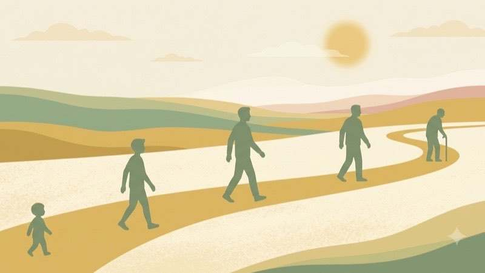
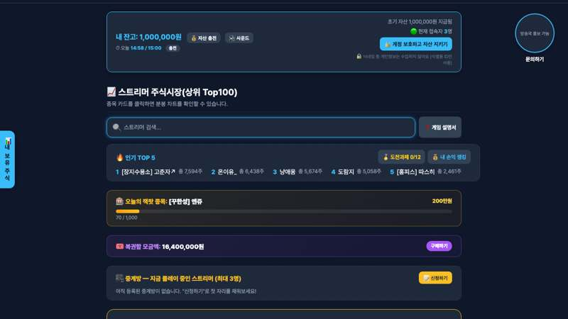
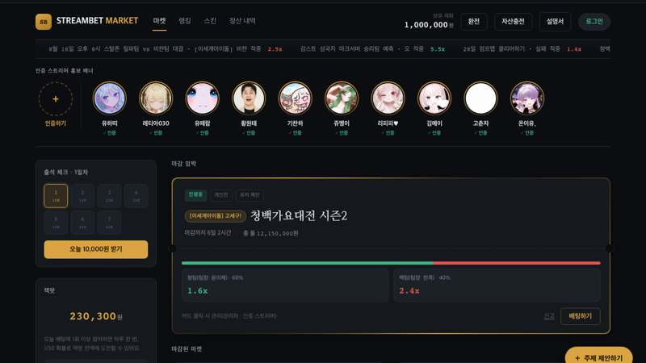
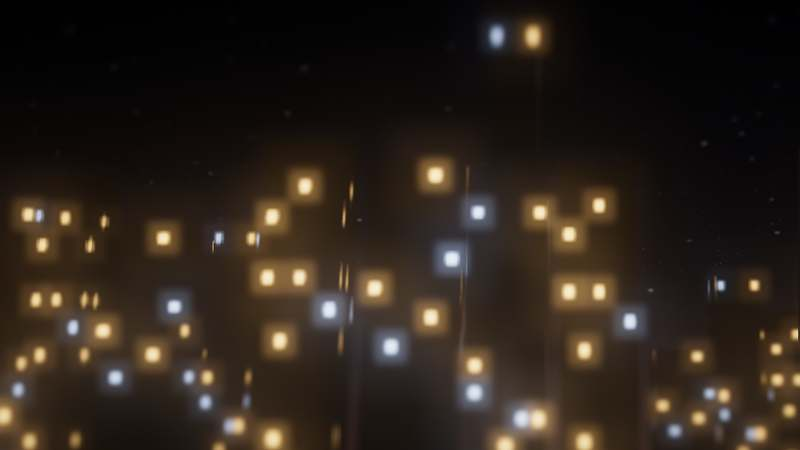
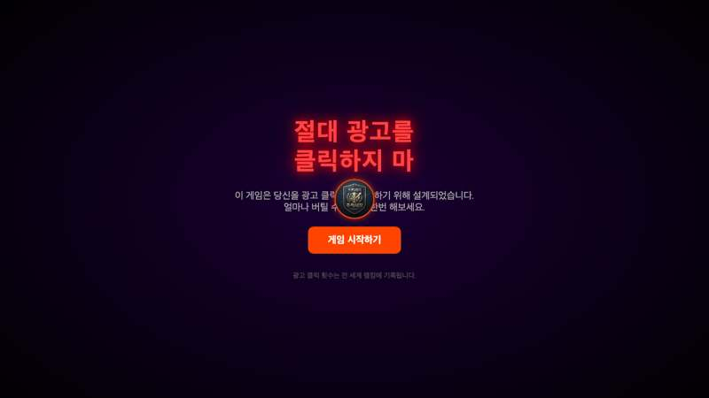
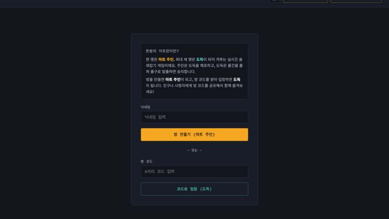

오목지면시그 · fan-made web games
오목지면시그 게임 모음
SOOP 스트리머를 소재로 만든 팬메이드 웹게임 여섯 종을 한곳에 모았습니다. 설치 없이 브라우저에서 바로 즐길 수 있고, 전부 무료입니다.
이 사이트는 무엇인가요
개인 개발자가 혼자 만들고 있는 SOOP 스트리머 팬 게임 프로젝트입니다. 인생 시뮬레이션부터 가상 주식·배팅 시장, 방송용 3D 배경 뷰어, 실시간 멀티플레이 술래잡기까지 장르가 다양합니다.
모든 게임은 게임 내에서만 쓰이는 가상 재화를 사용하며, 실제 현금으로 환전하거나 인출할 수 있는 기능은 없습니다.
게임 목록
-

인생스트리머 인생게임
좋아하는 스트리머의 이름으로 주인공을 만들고 0세부터 100세까지 선택을 이어가는 텍스트 인생 시뮬레이션. 경찰·의사·변호사·트레이더·사기꾼 등 20개가 넘는 직업 루트와 결말 도감이 있고, 다른 유저가 진행 중인 게임에 실시간으로 함께할 수 있습니다.
-

주식스트리머 주식시장
가상 재화 100만 원으로 시작해 좋아하는 스트리머 "종목"에 투자하는 가상 주식 거래소. 시세가 실시간으로 움직이고, 매일 총자산(현금+보유주식 평가액)이 캔들차트로 자동 기록됩니다.
-

배팅스트리머 배팅시장
스트리머 방송 중 벌어지는 이벤트를 두고 가상 재화로 배팅하는 시장. 유저가 직접 배팅 주제를 제안할 수 있고, 매일 배팅에 참여하면 1/50 확률로 잭팟 전액에 도전하는 기회가 주어집니다.
-

배경스트리머 배경시장
방송용 3D 배경을 꾸미고 둘러보는 뷰어. 갤러리에 게시된 프리셋을 바로 적용해보거나, OBS 브라우저 소스용 링크를 복사해 실제 방송 화면에 가져다 쓸 수 있습니다.
-

광고절대 광고를 클릭하지 마
화면을 따라다니며 클릭을 유도하는 광고를 피해야 하는 게임. 몇 번이나 낚여서 클릭했는지가 기록되고, 전 세계 유저와 랭킹으로 비교됩니다. 잡히면 레벨 1부터 다시 시작.
-

마트미드나잇 마트런
한 명은 마트 주인, 최대 세 명은 도둑이 되어 겨루는 실시간 멀티플레이 술래잡기. 방 코드로 스트리머와 시청자가 함께 접속해, 주인은 도둑을 체포하고 도둑은 물건을 훔쳐 제한 시간 안에 출구로 탈출해야 합니다.